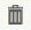
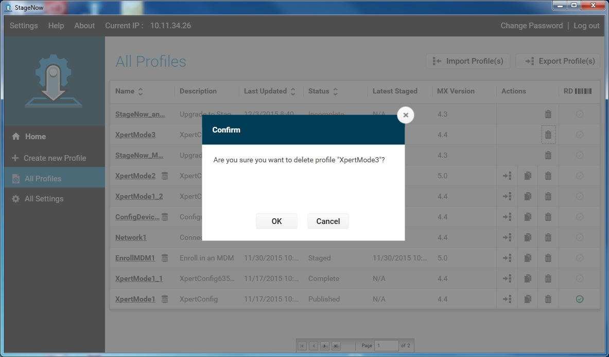

Deleting a Staging Profile
To delete a profile:
Select the trash icon next to the profile. 

Select OK to confirm the deletion.
A window indicates that the profile was successfully deleted. Select OK.
Upgrading Profiles
StageNow 2.3 and later allow the administrator to upgrade profiles created in any released or beta StageNow version to the latest version, i.e., StageNow 2.5.
-->